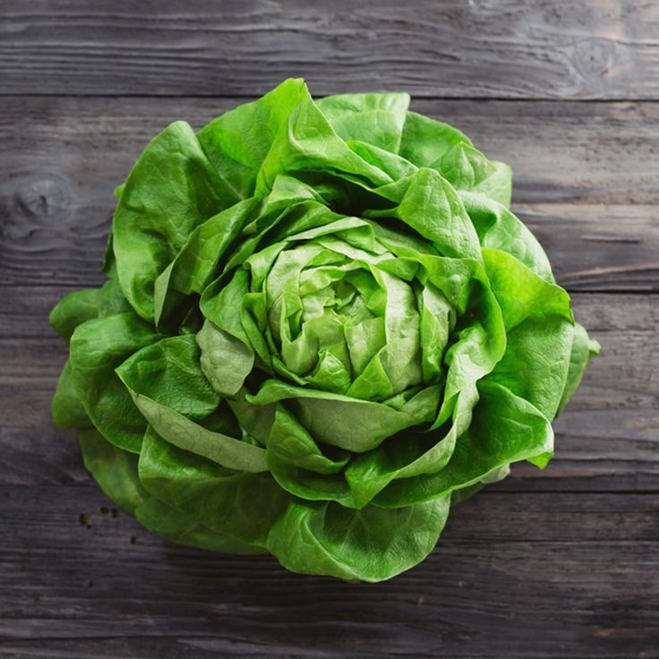

🥬 Alface
🌱 Como cultivar
A alface gosta de clima ameno, solo úmido e bem drenado. Plante em local com bastante luz, mas evite sol forte direto. Colha as folhas externas primeiro e deixe o coração da planta crescer.
🍽️ Receitas
Salada de alface com molho de mostarda e mel
Wrap de frango com alface
💡 Curiosidade
Na Roma Antiga, acreditavam que comer alface antes de dormir ajudava a ter sonhos tranquilos… já na França do século XVII, era servida até nos jantares da realeza como um “calmante natural".